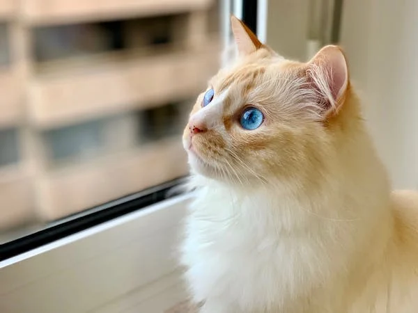

Why Love Cats
Companionship

Entertainment

Stress Reduction

Low Maintenance
Compared to some other pets, cats are relatively low maintenance. They are independent animals and can entertain themselves for long periods. They don't require walks like dogs and can be left alone for more extended periods.
Cat Guardians
Our Cat Guardians service ensures continuous care for your cat with a dedicated cuddle-giver, behind-the-ear-scratcher, and food provider, even in the event of your passing. Ensure your feline friend's happiness by planning for their well-being, considering what would happen to them if something were to happen to you.
Fostering Lifeline
Providing a confidential and complimentary fostering service, we ensure the well-being of cats from families escaping domestic abuse, offering assurance that their feline companions will be cared for until a safe reunion is possible.
Understanding Behaviour
Discover the intricacies of your cat's communication by exploring our comprehensive guides on feline behavior, covering topics such as interpreting body language, recognizing signs of stress, understanding reasons behind hiding, and addressing spraying behaviors.